| 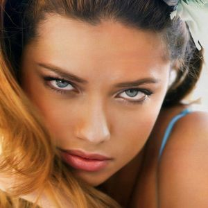 | Adriana Lima (born June 12, 1981) is a Brazilian model and actress, best known as a Victoria's Secret Angel since 1999 (being their longest-running model and named "the most valuable Victoria's Secret Angel" in 2017), as a spokesmodel for Maybelline cosmetics since 2003 and for her Super Bowl and Kia Motors commercials. At the age of 15, Lima won Ford's "Supermodel of Brazil" competition, and took second place the following year in the Ford "Supermodel of the World" competition before signing with Elite Model Management in New York City. |
| 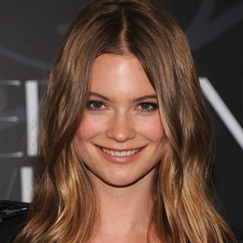 | Behati Prinsloo (born 16 May 1989) is a Namibian model. In 2008, she became the first Victoria's Secret PINK contract model, and moved on to become a Victoria's Secret Angel in 2009. She has walked in nine consecutive Victoria's Secret Fashion Shows (2007, 2008, 2009, 2010, 2011, 2012, 2013, 2014, and 2015). She has opened two Victoria's Secret Fashion Shows in a row (2014 and 2015). The video of Behati finding out she is opening her second Victoria's Secret Fashion Show in a row has over one million views on YouTube |
| 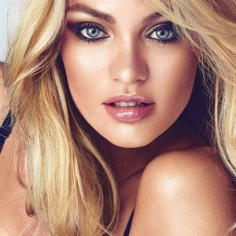 | Candice Swanepoel (born 20 October 1988) is a South African model, best known for her work with Victoria's Secret. In 2016, she came in 8th on the Forbes top-earning models list. In 2010, Swanepoel became a Victoria's Secret Angel. Swanepoel modeled for the Kardashians' 2010 swimwear line. On 12 August 2010, Swanepoel officially opened the first Victoria's Secret retail store in Canada, at West Edmonton Mall, Edmonton. In 2013, Swanepoel was named the cover model of the coveted Victoria's Secret Swim Catalogue. Swanepoel was chosen to wear the "Fantasy Bra" in the 2013 Victoria's Secret Fashion Show. The 10 million dollar bra, named the "Royal Fantasy Bra", was created by Mouawad. The bra and its matching belt featured over 4,200 precious gems, including rubies, diamonds and yellow sapphires set in 18 carat gold with a 52-carat ruby at the center. |
| 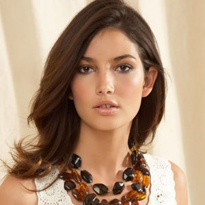 | Lily Aldridge (born November 15, 1985) is an American model. She is a Victoria's Secret Angel and a Sports Illustrated Swimsuit Issue model, appearing as a rookie alongside Chrissy Teigen and Nina Agdal in 2014 for the cover of the issue's 50th anniversary. In January 2011, Aldridge appeared on the cover of the February issue of British GQ with Lindsay Ellingson, Erin Heatherton, and Candice Swanepoel. In the same month, she appeared in an editorial for V Magazine with fellow angels Heatherton and Swanepoel. In October 2014, Aldridge appeared in British Vogue with fellow Victoria's Secret models Adriana Lima, Candice Swanepoel, Lais Ribeiro and Elsa Hosk. |
| 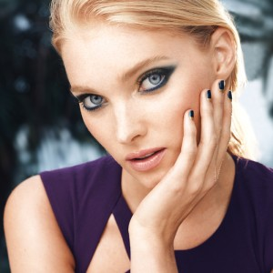 | Elsa Hosk (born 7 November 1988) is a Swedish model and current Victoria's Secret Angel, who has worked for a number of leading brands including Dior, Dolce & Gabbana, Free People, Ungaro, H&M, Anna Sui, Lilly Pulitzer and Guess. She modeled for Victoria's Secret, appearing in the brand's annual fashion show in 2011, 2012, 2013, 2014, 2015, 2016 and 2017. She has also appeared in many of the brand's campaigns, especially for the sub-division PINK In 2015, she was announced as one of 10 new Victoria's Secret Angels. She has also played professional basketball in Sweden. |
| 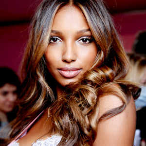 | Jasmine Tookes (born February 1, 1991) is an American model and Victoria's Secret Angel. She has appeared in advertising campaigns for Jimmy Choo, Calvin Klein, Lancôme, DKNY, Ralph Lauren, Kate Spade, Gap, Ugg, and Victoria's Secret. In 2015, she became a Victoria's Secret Angel. Tookes was selected to wear the Victoria's Secret Fashion Show Fantasy Bra (worth $3 million in 2016) at the 2016 show, which was held in Paris, France, which made her the 4th black model to wear the bra. Tookes made her debut at No. 17 on Forbes' "The World's Highest Paid Models" list in 2016, with estimated earnings of $4 million. |
| 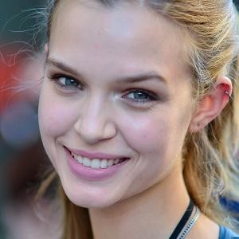 | Josephine Skriver (born 14 April 1993) is a Danish fashion model. She is a Victoria's Secret Angel and since her modeling debut in 2011, she has walked in over 300 fashion shows, modeled for some of the world's biggest fashion brands and been on the cover of and featured in magazines such as Vanity Fair, Elle, Harper's Bazaar and Vogue. She has worked with Mario Testino for Michael Kors, Steven Meisel for Vogue Italia, Tim Walker for American Vogue, Greg Kadel for German Vogue, Terry Richardson for H&M and Patrick Demarchelier for Dior. Skriver has appeared in catalogs and ads for Victoria's Secret and walked in the Victoria's Secret Fashion Show every consecutive year since 2013. In February 2016, it was announced that Skriver was officially one of the brand's contracted Angels. |
| 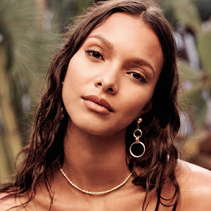 | Lais Ribeiro (born October 5, 1990) is a Brazilian model and Victoria's Secret Angel. She became a Victoria's Secret Angel in 2015. In 1 November 2017, Ribeiro was chosen to wear the "Champagne Nights Fantasy Bra" for the 2017 Victoria's Secret Fashion Show held in Shanghai, China in 28 November 2017. The $2 million dollar bra, named the "Champagne Nights Fantasy Bra", was created by Mouawad. The bra and its matching belt is handset with 6,000 yellow diamonds, yellow sapphires, and blue topaz in 18 karat gold. |
| 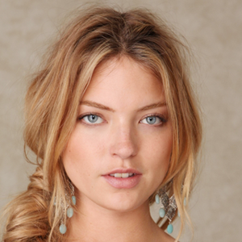 | Martha Hunt (born April 27, 1989) is an American fashion model, who walked the Victoria's Secret Fashion Show in 2013, 2014, and 2015. Hunt has been a Victoria's Secret Angel since 2015. She is also a spokesmodel for Free People. In 2014, she posed for Rebecca Minkoff and for the magazines Marie Claire Italy, Glamour Germany, Stonefox, and Lui. She walked for Tome, Jason Wu, Cushnie et Ochs, Hervé Léger, Carolina Herrera, Polo Ralph Lauren, and Jeremy Scott. She did an entry about the Coachella Music Festival in Vanity Fair UK. She was featured in Victoria's Secret's catalogue in early 2013 and walked her first Victoria's Secret Fashion Show in 2013. In 2014, she was credited. In 2015, she was part of the first Victoria's Secret Swim Special and became an Angel |
| 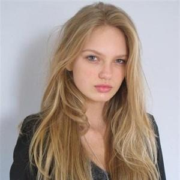 | Romee Strijd (born 19 July 1995) is a Dutch fashion model. She has been a Victoria's Secret Angel since 2015. In 2011, Strijd signed with the DNA Model Management agency. On March 17. 2017 she announced via her Instagram that she is now represented by IMG Models Management. She has appeared in editorials for British, German, Spanish, and Dutch Vogue, French and Dutch Elle, Spanish Harper's Bazaar, Dutch Marie Claire, and French Madame Figaro. She has appeared in campaigns for Carolina Herrera, Alexander McQueen, Donna Karan, Stradivarius, Giuseppe Zanotti, H&M, and Marchesa. In 2014, she was chosen to be one of the newcomers at the Victoria's Secret Fashion Show. In 2015, she became a Victoria's Secret Angel. In March 2017 she announced that she was now represented by IMG Models. |
| 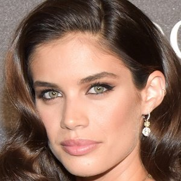 | Sara Sampaio (born 21 July 1991) is a Portuguese model best known for being a Victoria's Secret Angel and working for Calzedonia, as well as her appearance in the 2014 Sports Illustrated Swimsuit Issue, a first for a Portuguese supermodel, for which she won Rookie of the Year. She has appeared in magazines such as GQ, Elle, Vogue, Glamour and Sports Illustrated. Since 2017, Sara is the Beauty Ambassador for Moroccanoil. She won Portuguese Golden Globes in 2011, 2012, 2014, 2015 and 2016 for Best Female Model. As of November 2017, Sampaio is the 18th most popular top model on social media in the world, with a total of 10 million followers across social media. She is also the most popular on social media among the new Victoria's Secret Angels and the 4th most popular Victoria's Secret Angel, only after veteran models Adriana Lima, Alessandra Ambrosio and Candice Swanepoel. Sara Sampaio is currently ranked by Models.com as one of the "Top Sexiest Models" in the fashion industry. |
| 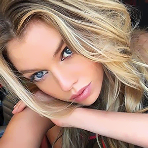 | Stella Maxwell (born 15 May 1990) is a British fashion model. Known for being an Angel of Victoria's Secret and the face of Max Factor. She walked the Victoria's Secret Fashion Show 2014 where she was credited. In 2015, she became a Victoria's Secret Angel. In 2016, Maxwell was voted No. 1 in 2016 Maxim's "Hot 100 List". |
| 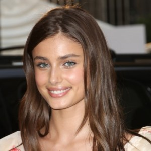 | Taylor Marie Hill (born 5 March 1996) is an American fashion model and current Victoria's Secret Angel since 2015. In 2016 Taylor Hill's name has reached No. 9 with 3.6 million followers on the Most Followed Models list by Harper's Bazaar. After working in campaigns and photoshoots, Taylor Hill walked for high fashion designers Versace, Valentino, Chanel, Armani, Moschino, Dolce & Gabbana, Brandon Maxwell, Balmain, Givenchy, Fendi, Ralph Lauren, Kenzo, DKNY during the New York, Milan and Paris Fashion Weeks and she has been the face for advertisement of Jimmy Choo by Craig McDean, Michael Kors by Mario Testino, Topshop by Giampaolo Sgura, David Yurman by Bruce Weber and Joe's Jeans by Mario Sorrenti between 2016-2017. |